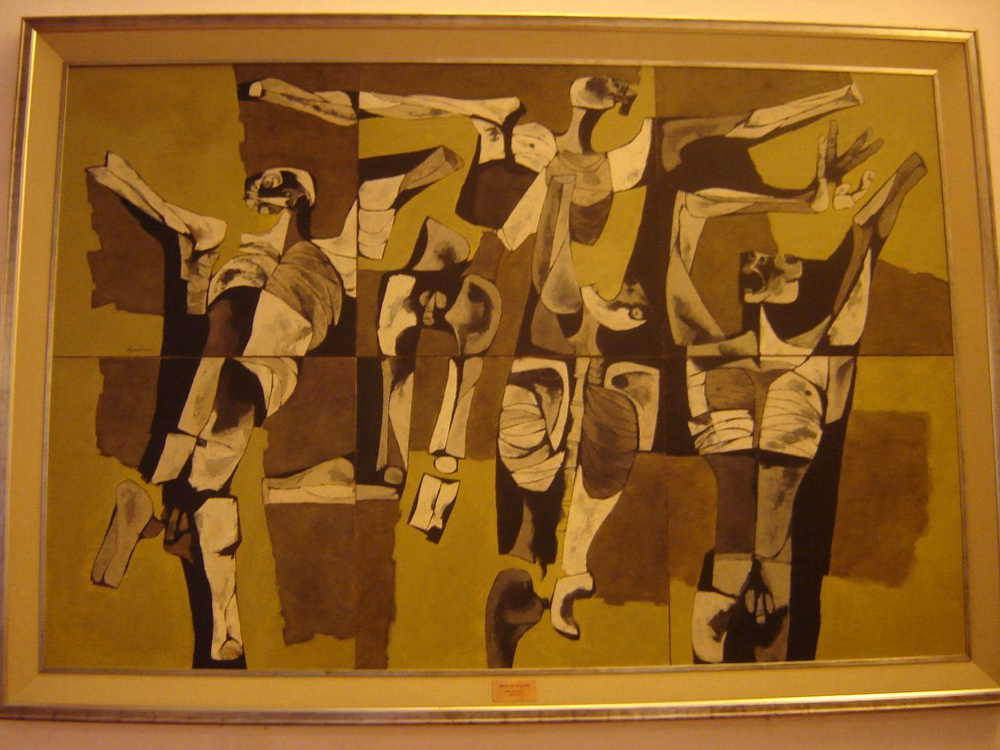

Danzantes — Lloyd Wulf
Esta pintura fue la ganadora de la primera edición del Salón de Julio, en 1959. Es una obra vinculada a los inicios de uno de los concursos artísticos más importantes de Guayaquil, que ha contribuido a impulsar la pintura y el talento nacional.